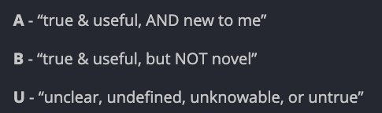
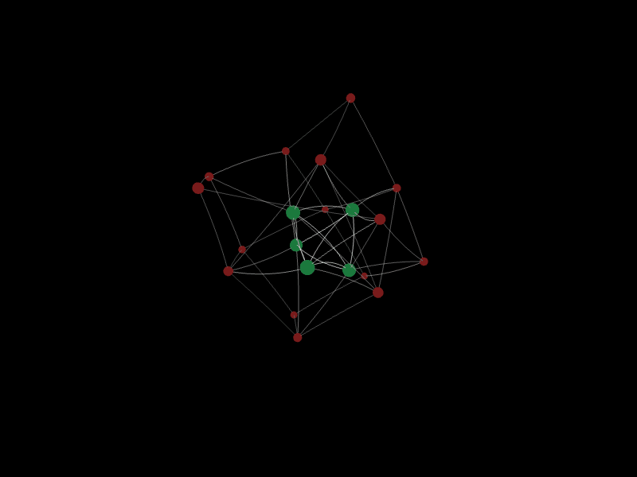
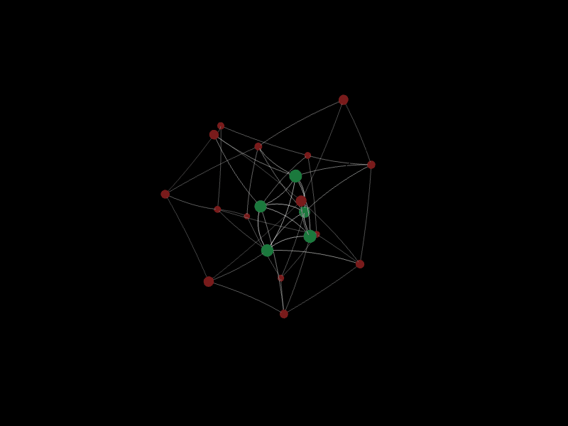
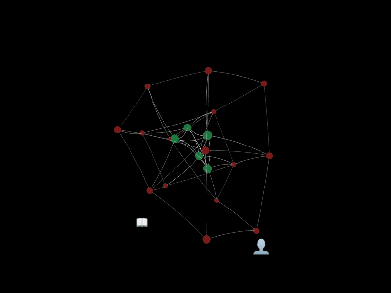
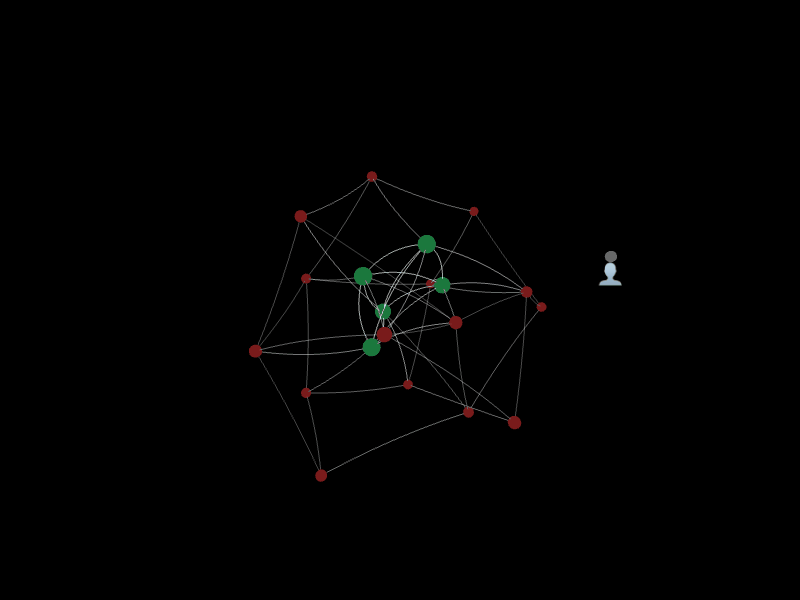
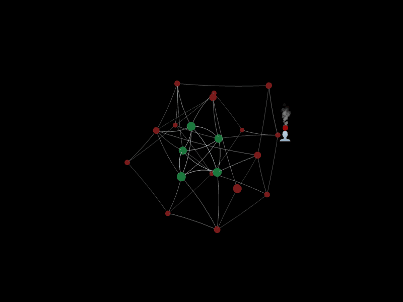
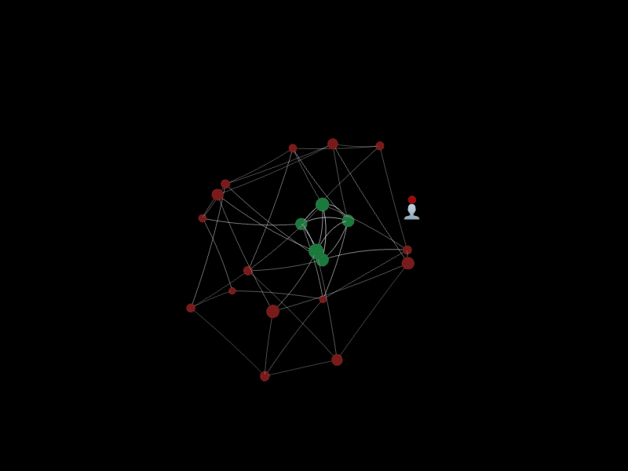
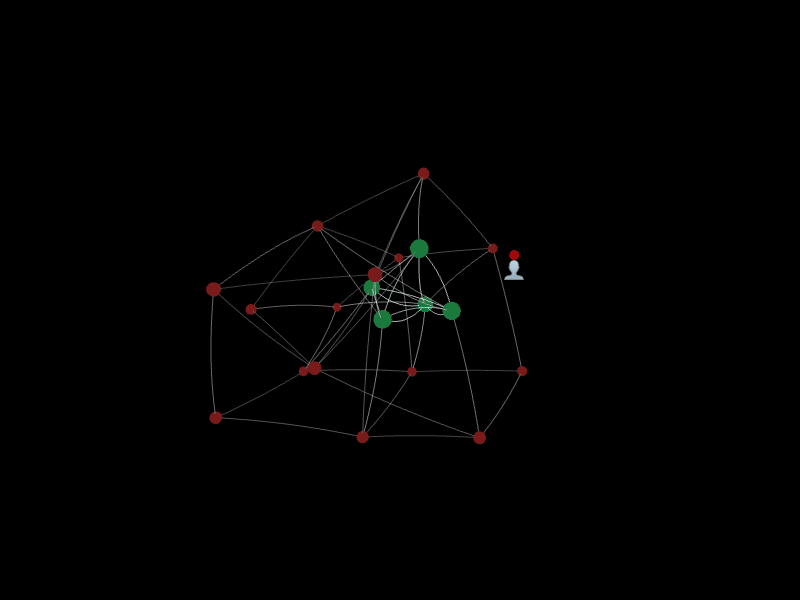

- 2026-03-31
- The A/B/U system (link to ORI doc) has further clicked for me! I’m seeing how it’s a really powerful tool for meta-cognition !!! For thinking about your thinking, for seeing your cognition, which empowers you to learn better, to think better
I’m excited!
- Screenshot from my public-facing journal in the “Open Research Institute” Discord, from today 👇

- And Defender’s reply, re: my excitement 👇

- And, planning on writing a short book about this! Message from Defender to the team:

What is it?
- I’ve written about it in the past:
- https://openresearchinstitute.org/onboarding/A_B_U.html
- A reminder of the A/B/U model:

- But, the thing I learned a few days ago is that “A”s actually mature into “B”s when you test them and they seem to hold up!! This is not captured in their current onboarding page!!
- An “A” is a new and seemingly correct belief/idea, that slots into your model
- A “B” is a more mature A: you’ve tested it and it now seems like a tested, provisional truth
Key
- In the below gifs (made by me, Claude Code and BMAD today, an absolute thrill, literally one of the most exciting work days of my life, lol1):
- Red nodes are “A”s (brand new, untested, but seem true)
- Green nodes are “B”s (have been tested, appear to be true)
- Purple, “outsider” nodes are “U”s - new bits of data, new ideas that are unknown. Are they true? Are they bullshit? Currently, you’re unsure
Part 1: “A”s, “B”s, “U”s
Gaining As, A frontier
- “A” ceiling, “A” frontier

An A maturing to be B
- (Also porting this to the atomic note - A maturing to a B)
- An A matures into a B when it receives some data from the outside world that confirms it
- An A is an untested belief, a B is a belief that now has some empirical, from-the-universe data to support it
- One example: you test the A in the real world and find that it empowers you, or is predictive. E.g. “oh shit, ok, I think that person is feeling x way because of y, I didn’t know y could make you feel x!” (an A, “it seems that y can make you feel x”) → ask them and they confirm → now it’s a B
- Vs, you assume that, you act on it (“oh, they must be feeling x because of y, so i’ll take this action to address y”) → they say “dude wtf, you were totally wrong, you misread the situation” → oh damn ok, that A was wrong
- 👆 all of this feels a bit muddy to me, still. Noting my own confusion here

Two “U”s arrive, one from a book, one from a person
- The U from a book successfully becomes an A
- The U from a person remains a U and fades away

Part 2: Maladaptive Bs
- You can have Bs, beliefs that have been tested, that have some evidence, but are maladaptive
One of your “B”s leads to an action that burns someone
- A “B”, a belief you you have, burns someone
- The whole write-up is inspired by my relatively new “it’s very very important that I say things really honestly even if it comes across as disagreeable, sugar coating is counterproductive and a waste of time!!” burning a coworker

The burned person sends data your way
- “Hey, wtf, that sucked!”
- And they may offer some advice (or a mentor does), e.g. “look, even if you have a good point, it’s much better to communicate it skillfully, and ask questions, don’t come at this from a place of ‘this belief of mine is definitely true, and I’m stressed about the implications’”
- But, this advice lands for you as a “U” - it clashes too much with your B (“I must be honest no matter what!!” + maybe another one “I can’t waste time on things like sugar coating!!!“)
- You already have locked-in beliefs that are hard to change, that are Resistant to Change (a book by Robert Kegan about this!), so their advice remains a “U”, so it fades away

Alternative: their feedback lands as an “A”, and matures to a “B”
- You have the scaffolding/prerequisites required for their feedback to land as an “A”
- Maybe they deliver the feedback to you, and gently/patiently scaffold you to a place where you can get it. Or maybe it’s advice that you were already close to getting anyway, as it’s near your “A frontier”
- And then, you consolidate it to a “B”, and it counterbalances the original “B” that causes the pain/the maladaptive behaviour
- In this version, the new B ends up around the same size/weight as the old. They’re in orbit together, counterbalancing each other

Same as above but heavier weight
- In this version, the new B weighs much more than the old B. An echo of the old belief remains, but it has been heavily outweighed by this new one. Maybe you finally realise that that old B was useful for you up until the age of like, 10, but has been super maladaptive since then, you’ve just never foregrounded this fact or realised that there is an alternative

Robert Kegan “Immunity to Change”
Summary of the “Immunity Map”, from the book (via NotebookLM)
The Immunity Map is a diagnostic tool, often referred to as a mental “X-ray,” designed to make visible the hidden internal dynamics that prevent individuals and groups from achieving their most desired changes. It reveals a “dynamic equilibrium” or an immune system where a person has “one foot on the gas” (the sincere desire to change) and “one foot on the brake” (the self-protective system keeping the status quo).
The map consists of four primary columns that build a coherent picture of this internal contradiction:
1. Column 1: Commitment (Improvement Goal)
This column identifies a specific, high-leverage improvement goal that the person or group is genuinely and urgently committed to. A good goal should be adaptive—meaning it requires the person to grow—rather than a technical skill that can be easily learned. It should be something that, if achieved, would make a significant difference to the person and those around them.
2. Column 2: Fearless Inventory (Doing/Not Doing)
In this column, the author lists concrete behaviors they currently engage in (or fail to do) that work against the Column 1 goal. This is not for problem-solving or explaining why the behaviors happen, but simply for providing descriptive depth and honesty about how one is currently undermining their own aspirations.
3. Column 3: Hidden Competing Commitments
This column uncovers the heart of the immunity. It begins with the “Worry Box,” where the author identifies the fears or “oh, shit” feelings that arise when they imagine doing the opposite of the behaviors in Column 2. These fears are then converted into competing commitments—active, self-protective motivations to ensure the scary things do not happen. These entries make the obstructive behaviors in Column 2 look perfectly sensible and brilliant from the perspective of self-protection.
4. Column 4: Big Assumptions
The final column identifies the core beliefs or mental models that sustain the entire immune system. These are called “Big Assumptions” because they are uncritically taken as truths or incontrovertible facts rather than possibilities. They create the “Danger Zone” that makes the self-protection in Column 3 feel necessary.
The Purpose of the Map
The goal of the Immunity Map is to help a person move a mental structure from “subject” (something that “has” them and controls them) to “object” (something they can look at, test, and control). By converting the contradiction a person is into a contradiction they have, they can begin to disrupt the immune system through SMART tests—safe, modest, actionable experiments designed to gather data and challenge the validity of their Big Assumptions.
Footnotes
-
BMAD provides Claude Code with the scaffolding to act like an entire team, as if you have an entire Agile-trained team at your disposal. E.g., first you get interviewed by the product owner (“John”), who, after getting a better understanding of your problem space and desired solution, created a PRD (product requirement doc) for the next persona (a software engineer) to execute. It’s soooooo much better than just asking Claude Code to make something, because when you do that, you realise after a bit that oh shit, this wasn’t well thought out, I’m now realising that I want x feature, etc, and the code becomes buggy and messy and horrible. This is way more efficient, way more thorough, way cleaner, it’s just an absolute miracle dude. And all I’ve done so far with it is make 9 gifs!! 👀 ↩